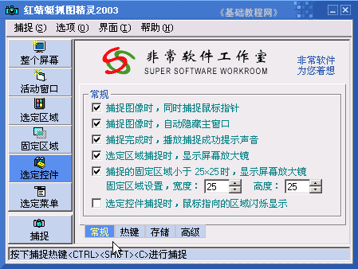

抓图基础入门教程
二、运行软件 返回
安装好以后，我们就可以运行一下看看，然后设置一些常用的操作，下面我们来看一个练习；
1、运行软件
1）点击桌面上的“红蜻蜓抓图”图标，出来一个窗口面板；
2）窗口左侧是捕捉对象和捕捉按钮，点最左下角的“捕捉”就可以进入捕捉状态，然后点左键完成捕捉，点右键取消捕捉；
后面我们设置成 Ctrl＋J 组合键来捕捉；
2、设置捕捉选项
1）在面板的左侧把“选定控件”点击选中，颜色变蓝色，
然后在右边的常规里，把上面五个勾都选中，最下面的“选定空间捕捉时..”不选；

2）然后先点下边的“热键”标签，进入这个选项面板里面，
把上面的捕捉热键里的 SHIFT 下面的勾去掉，右边的 C 下拉列表里点一下，选 J
把下面的重复捕捉里的勾都去掉，右边的 R 里点一下，选最后的 None，也就是不用，
然后点右边的“注册热键”按钮，保存一下热键；
3）然后点旁边的“存储”标签，进入到存储选项面板，
这儿可以设置一下默认的保存路径，和保存的格式，一般可以设到 我的文档，和GIF格式，
也可以先用默认的；
4）再点下边的“高级”标签，进入它的选项面板，
可以把第二个勾选中，这样启动后自动缩小到右下角的系统托盘里头 ；
；
5）这样就设置好捕捉方式，按组合键 Ctrl＋J （按住Ctrl键不松，再按一下字母J，然后再松开两个）
出来一个红线圈住的方框，这就是捕捉区域了，点右键退出；
本节学习了设置红蜻蜓抓图的基本方法，如果你成功地完成了练习，请继续学习下一课内容；
本教程由86团学校TeliuTe制作|著作权所有
基础教程网：http://teliute.org/
美丽的校园……
转载和引用本站内容，请保留版权信息和本站链接。